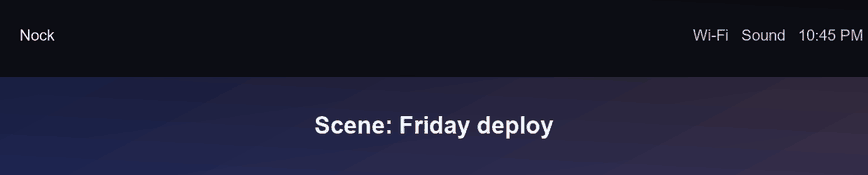
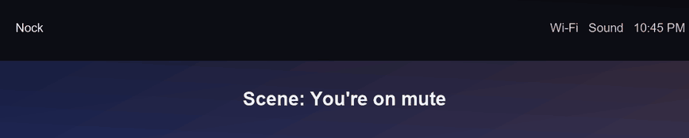
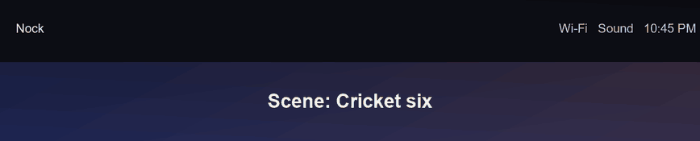
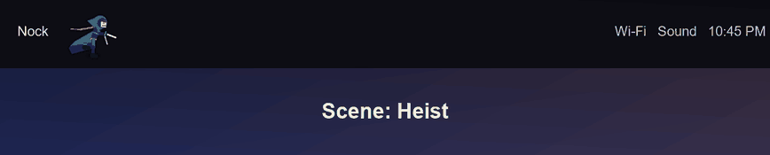

The top of your
screen is doing
nothing.
Nock hangs a notch off it. Tasks, a focus timer, music, clipboard history. The one at the top of this page is live. Click it.
Heavy? Not here.
Most desktop widgets ship a whole browser to draw a few pixels. Nock is plain Rust. Direct2D draws it, and it only redraws when something changes.
Figures are from the project README, measured on one PC. Typical Electron apps use hundreds of MB, but this isn't a benchmark against any specific app. Check yours in Task Manager, Details, nock.exe.
Capture it before you forget it.
From any app. Type the task, hit Enter, and the notch closes again. Two seconds. Try it on this page with the same keys.
It has a little life.
A buddy lives on your top bar. Every few minutes the cast acts out a short scene, a Friday deploy gone wrong, a meeting stuck on mute, a cricket six. Between scenes nothing runs. You can turn all of it off.




Windows will side-eye it.
Nock isn't code-signed yet, so Windows doesn't know me. That's all the warning means. The source is public, so you can read it before you run anything.
Click More info, then Run anyway. That's the usual SmartScreen note.
It blocks unsigned apps outright. The README has the fix.
It's MIT licensed and small enough to read. Go look.